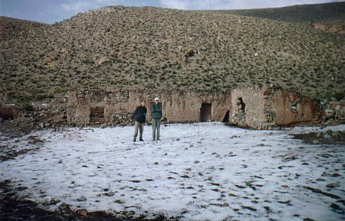
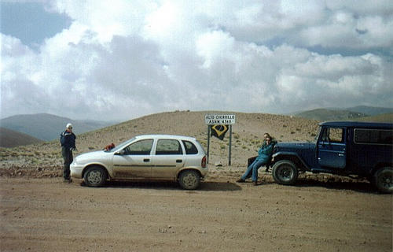
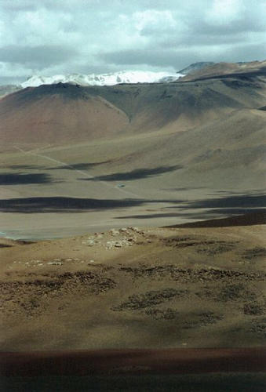
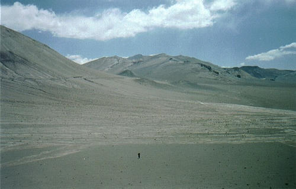
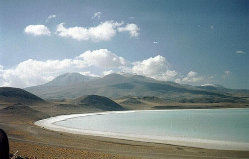
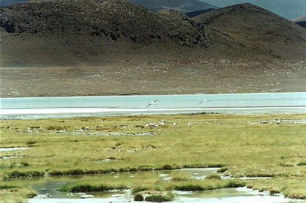

Sem dúvida a travessia dos andes é o ponto alto (nos dois sentidos) do caminho até o deserto. Deixando S.A. de los Cobres pra trás, seguimos o caminho.

Andes, ruínas e gelo no chão
Local: Estrada s.a.cobres/sico - ARGENTINA - 2000
Logo na saída, em meio às ruínas de uma casa de pedra, gelo no chão da "geada" da noite passada e alguns pontos verdes ao fundo, que são os poucos tipos de vegetação que conseguem sobreviver a essa altitude. Nos andes, acima de 3500 metros de altitude é raro haver qualquer tipo de vegetação por motivos óbvios (para biólogos).

Ponto mais alto da viagem: 4560m
Local: Estrada passo de sico - ARGENTINA - 2000
Preste atenção na placa: "alto chorillo a.s.n.m. 4560". É isso aí, este é o ponto mais alto de todo o caminho por onde o carro tem que passar. Já acima dos 3000 metros de altitude, pode-se perceber uma queda brusca no rendimento do carro, tendo que subir em 3ª, às vezes até 2ª marcha, pois como o ar é rarefeito, há pouco oxigênio para fazer a combustão/compressão no motor. Carros com injeção eletrônica conseguem se adaptar a essa situação, não perdendo tanto desempenho.
Ah! E além do carro o nosso corpo também sofre com a altitude. Em nosso caso foi apenas uma dor de cabeça leve e respiração ofegante, mas existem pessoas que vomitam e passam muito mal nessa altitude. Nesse caso, basta descer, esperar um pouco e subir mais devagar, até que seu organismo se acostume.

Panorâmica da aduana chilena
Local: Estrada passo de sico - CHILE - 2001
Atravessada a fronteira e já em terreno chileno, eis que no meio de um vale entre montanhas surge o posto de aduana e inspeção sanitária. É o ponto azul/verde no meio da foto. O visual dispensa comentários. Montanhas gigantes, picos nevados, a sombra das nuvens, pedras... Ah! Coma todos os alimentos perecíveis ANTES de chegar aqui, senão já era.

Imensidão de nada, uma cratera no deserto
Local: Estrada passo de sico - CHILE - 2000
Passamos a aduana e o deserto parece ficar BEM mais agressivo e árido, de maneira brusca. É uma imensidão de nada por todos os lados, apenas areia e pedra, MUITO massa mesmo. Aquele solzão batendo na cara... Mas mesmo assim tem que ficar de blusa porque bate um vento lazarento de frio lá. Ah! Aquele tracinho preto na parte de baixo da foto sou eu correndo, esse lugar era uma espécie de uma cratera com montanhas em volta. Nem preciso comentar que após esse "exercício", fiquei morto, pois esqueci que não tinha muito ar pra respirar por lá :)

Lagoa tuyato com água verde piscina
Local: Estrada passo de sico - CHILE - 2000
Mais uma surpresa dos andes: salares! De repente, em meio às pedras surge essa lagoa, que na foto não aparece mas é de uma cor muito viva, um azul-piscina no meio e vai clareando nas bordas, é lindo. Essa é uma lagoa salgada natural. Até dá pra ir lá dar um mergulho, mas o vento é MUITO frio. Nem rola. Ótimo lugar pra almoçar (e ser surpreendido por uma tempestade da época das chuvas).

Flamingos na lagoa tuyato
Local: Estrada passo de sico - CHILE - 2001
Nesta mesma lagoa, flamingos habitam tranqüilamente. Bem, flamingos são flamingos, nada de extraordinário pra falar...